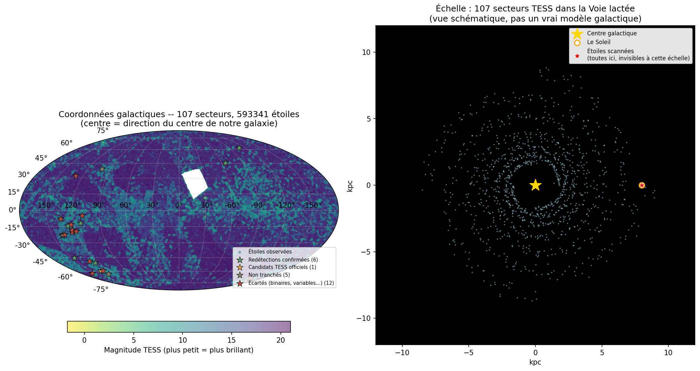

Avant de chercher l'inconnu, retrouver le connu
Kepler-69 est un système à deux planètes confirmé depuis 2013. Le pipeline a été pointé dessus en aveugle — sans lui donner la période attendue — pour vérifier qu'il retrouve un vrai signal avant de lui faire confiance sur autre chose.

- Kepler-69b — période publiée 13.7 jdétecté : 13.7218 j
- Kepler-69c — période publiée 242.4613 jdétecté : 242.4666 j
- Écart sur la planète c < 1 hsur une période de 242 jours
Chaque filtre existe à cause d'une étoile précise
Aucun de ces garde-fous n'a été ajouté par précaution théorique. Chacun corrige une erreur réellement commise, sur une vraie étoile, repérée en l'examinant à l'œil.
Bord de grille de recherche
TIC 346888622 retrouvait deux fois la même période — 0.5000 j, exactement la borne basse testée. Le vrai signal, s'il existe, tombe hors de la plage explorée. période ≈ borne → écarté
Ratio durée/période excessif
TIC 326242565 et TIC 65903024 donnaient des "transits" occupant 34 % et 44 % de leur cycle orbital. Une vraie planète transite rarement plus de 10-15 % de sa période. durée / période > 15 % → écarté
Période dupliquée après masquage
Douze étoiles retrouvaient leur propre signal jusqu'à 5 fois après masquage — TIC 120932152 : 1.2629 j, cinq fois d'affilée. Le masquage n'efface pas une variabilité continue. signal non masqué → étoile entière invalidée
Profondeur de transit excessive
TIC 93441696 creusait 20 % de flux, en double bosse par cycle. Aucune planète n'atteint cette profondeur — seule une étoile compagnon le peut. profondeur > 5 % → écarté
Cluster à 13.7 jours
Plusieurs étoiles convergeaient vers la même période, à quelques heures près : 13.7 jours — la période orbitale de TESS elle-même. Chaque secteur contient une coupure de données au périgée, à mi-parcours. période ≈ 13.7 j ± 0.9 → écarté
Ce qui a passé les filtres automatiques — puis l'œil
Chaque étoile ci-dessous a survécu aux cinq filtres et mérité un examen visuel complet : périodogramme, cycle replié en entier, zoom sur le signal. Un tampon = un verdict, jamais retouché après coup.
 Binaire
Binaire
TIC 150284425
RA 117.311 · DEC -35.243 · Tmag 5.99
Creux net et profond (4.2 %) — le plus prometteur du lot. Mais l'étoile hôte est une A chaude de 3.6 R☉ : ça implique un compagnon de 7.17 rayons joviens. Trop gros pour une planète — naine rouge ou brune en transit.
 Binaire
Binaire
TIC 89045042
RA 47.594 · DEC -31.127 · Tmag 8.85
Deux éclipses distinctes par cycle, décalées (pas à phase 0.5 pile) — signature d'une binaire à éclipses sur orbite excentrique, pas d'un transit planétaire isolé.
 Binaire
Binaire
TIC 93441696
RA 87.043 · DEC -20.023 · Tmag 7.91
20 % de variation, double bosse par cycle — variation ellipsoïdale classique d'une binaire serrée déformée par la marée. Le cas qui a motivé le filtre de profondeur.
 Variable
Variable
TIC 166932528
RA 60.170 · DEC -30.491 · Tmag 5.93
Onde continue sur l'ensemble du cycle, forêt de pics comparables au périodogramme — étoile pulsante à fréquences multiples, pas un événement ponctuel.
 Variable
Variable
TIC 369470361
RA 101.497 · DEC -14.796 · Tmag 5.21
Même profil que TIC 166932528 — modulation continue, pas de creux isolé. SNR le plus faible des candidats retenus, cohérent avec un signal de pulsation ténu.
 Artefact probable
Artefact probable
TIC 54002166
RA 23.427 · DEC -12.213 · Tmag 8.57
La puissance grimpe encore au bord de la plage testée (15 j) au lieu de redescendre — la vraie période est probablement au-delà. Dupliqué à 0.8″ près sous un second identifiant TIC : même étoile, comptée deux fois.
 Non tranché
Non tranché
TIC 178155732
RA 42.985 · DEC -30.814 · Tmag 5.91
Baseline plate, pas de faux positif évident — mais signal trop faible et bruité pour conclure. Ni écarté ni retenu : demande plus de données.
 Variable
Variable
TIC 326242565
RA 41.278 · DEC -18.572 · Tmag 4.03
Le tout premier candidat du projet. "Transit" occupant 34 % du cycle — ce cas précis a motivé la création du filtre de ratio durée/période.
 Binaire (confirmée)
Binaire (confirmée)
TIC 37606218
RA 93.249 · DEC -27.880 · Tmag 9.26
Le candidat le plus propre du projet -- passe tous les filtres automatiques ET l'examen visuel. Mais déjà étudiée par des astronomes professionnels (spectroscopie NIRPS/HARPS, MNRAS 2025) : c'est une naine M en orbite, pas une planète -- rayon proche d'une géante gazeuse, mais masse stellaire. Une contamination lumineuse de 21.6% par une étoile voisine (78'') brouille encore le signal. La limite exacte d'un pipeline photométrique seul : le rayon ne suffit pas, il faut la masse.
 Planète confirmée (TOI-6442.01)
Planète confirmée (TOI-6442.01)
TIC 97921547
RA 107.833 · DEC -35.850 · Tmag 11.10
Statut officiel CP dans la table TOI -- une vraie exoplanète confirmée par la communauté professionnelle. Ton pipeline l'a redécouverte en aveugle : période officielle 2.8279716j contre 2.8277j calculée ici, rayon officiel 18.5 R_terre contre 19.7 estimé. Pas une découverte personnelle -- une validation supplémentaire, aussi solide que Kepler-69.
 Planète connue (TOI-1936.01)
Planète connue (TOI-1936.01)
TIC 178289267
RA 60.948 · DEC -19.057 · Tmag 11.71
Statut officiel KP (Known Planet) -- système déjà établi avant TESS. Période officielle 2.3506186j contre 2.3499j calculée ici, rayon officiel 12.8 R_terre contre 12.1 estimé. Encore une redécouverte en aveugle, pas une nouvelle planète.
 Candidat TESS officiel (TOI-7703.01)
Candidat TESS officiel (TOI-7703.01)
TIC 88507544
RA 47.770 · DEC -29.758 · Tmag 12.14
Déjà répertoriée comme candidat par le pipeline officiel de TESS (statut PC, pas encore confirmée ni par TESS ni par personne). Correspondance quasi parfaite : période officielle 2.1523127j contre 2.1515j ici, rayon officiel 12.16 R_terre contre 12.1 calculé. Le candidat le plus net du projet, toujours en attente de confirmation -- par TESS comme par ce pipeline.
 Non classée
Non classée
TIC 93334206
RA 86.520 · DEC -18.299 · Tmag 11.63
SNR élevé (52.5) et forme propre, mais absente de la table TOI officielle -- ni confirmée, ni rejetée, ni même encore examinée par le pipeline TESS. Partage un profil de périodogramme très similaire aux 3 autres candidats de ce lot (tous confirmés ou déjà classés), ce qui la rend intéressante -- mais sans suivi spectroscopique indépendant, elle reste au-delà de ce qu'on peut trancher ici.
 Planète connue (TOI-471.01)
Planète connue (TOI-471.01)
TIC 47911178
RA 98.351 · DEC -23.486 · Tmag 9.79
Secteur 108. Statut officiel TOI : KP. Classé automatiquement, à vérifier visuellement avant publication sur le site.
 Planète connue (TOI-404.01)
Planète connue (TOI-404.01)
TIC 166833457
RA 58.429 · DEC -34.328 · Tmag 12.39
Secteur 108. Statut officiel TOI : KP. Classé automatiquement, à vérifier visuellement avant publication sur le site.
 Planète connue (TOI-1271.01)
Planète connue (TOI-1271.01)
TIC 286923464
RA 203.510 · DEC 53.728 · Tmag 7.46
Secteur 16;22. Statut officiel TOI : KP. Classé automatiquement, à vérifier visuellement avant publication sur le site.
 Planète connue (TOI-2020.01)
Planète connue (TOI-2020.01)
TIC 39903405
RA 245.151 · DEC 41.048 · Tmag 8.28
Secteur 24. Statut officiel TOI : KP. Classé automatiquement, à vérifier visuellement avant publication sur le site.
 Non classée
Non classée
TIC 46627823
RA 85.182 · DEC -17.546 · Tmag 11.04
Signal net et isolé (période corrigée : le pipeline batch avait détecté un alias à 4x la vraie période, 24.02j au lieu de 6.0049j). Rayon implicite 1.59 R_jup -- zone ambiguë entre géante gazeuse et naine M compacte. Absente de la table TOI et d'aucune publication trouvée. Comme TIC 93334206, reste au-delà de ce qu'un pipeline photométrique seul peut trancher sans suivi spectroscopique.
 Binaire
Binaire
TIC 117739806
RA 96.204 · DEC -31.864 · Tmag 9.40
Deux pics quasiment aussi hauts dans le périodogramme (2.81j et 5.62j, rapport 2:1) -- signature classique d'une binaire à éclipses dont primaire et secondaire ont des profondeurs proches. Creux asymétrique dans le cycle complet, cohérent avec cette interprétation.
 Binaire
Binaire
TIC 49701947
RA 95.798 · DEC -27.729 · Tmag 10.99
Deux excursions distinctes dans le zoom (phase -0.06 et +0.05), pas un seul creux isolé -- signature de binaire à éclipses primaire+secondaire proches en phase plutôt qu'un transit unique.
 Binaire
Binaire
TIC 172742334
RA 101.408 · DEC -26.712 · Tmag 11.74
Deux excursions rapprochées en phase dans le zoom plutôt qu'un creux isolé -- même défaut que plusieurs binaires déjà identifiées dans ce projet.
 Binaire
Binaire
TIC 290476605
RA 139.166 · DEC 0.729 · Tmag 6.32
Même motif de double excursion rapprochée en phase que TIC 172742334. SNR faible (12.1), cohérent avec un signal peu fiable.
 Structure ambiguë
Structure ambiguë
TIC 29847695
RA 23.581 · DEC -8.458 · Tmag 7.59
Plusieurs excursions proches et mal définies dans le zoom, SNR au ras du seuil (10.0) -- pas un creux isolé net.
 Non tranché
Non tranché
TIC 386563653
RA 159.136 · DEC -12.234 · Tmag 5.42
Creux unique et isolé dans le cycle complet, le plus propre des 4 de ce lot. Mais périodogramme atypique (transition brutale vers une forêt de pics après 12.7j) qui n'inspire pas une confiance totale. Ni écarté ni retenu.
 Planète connue (TOI-4612.01)
Planète connue (TOI-4612.01)
TIC 97735908
RA 92.664 · DEC 30.957 · Tmag 8.22
Secteur 44. Statut officiel TOI : KP. Classé automatiquement, à vérifier visuellement avant publication sur le site.
 Doublon/Chaotique
Doublon/Chaotique
TIC 191463077
RA 11.047 · DEC 46.236 · Tmag 7.20
Période et SNR identiques à TIC 601366244 -- très probablement la même étoile sous deux identifiants TIC différents. Motif en boucles multiples superposées dans le zoom, pas un creux net : exclut un transit propre de toute façon.
 Doublon/Chaotique
Doublon/Chaotique
TIC 601366244
RA 11.047 · DEC 46.235 · Tmag 7.42
Voir TIC 191463077 -- période et SNR identiques, quasi certainement le même objet sous un second identifiant.
 Aliasing
Aliasing
TIC 38937499
RA 10.298 · DEC -68.458 · Tmag 8.72
4 creux régulièrement espacés dans un seul cycle replié -- la vraie période est le quart de celle testée (8.11j / 4 ≈ 2.03j), signature classique d'aliasing plutôt qu'un vrai transit à cette période.
 Binaire (ellipsoïdale)
Binaire (ellipsoïdale)
TIC 385231167
RA 167.073 · DEC -15.962 · Tmag 7.52
Puissance du périodogramme à 1.75 million, un ordre de grandeur au-dessus du reste -- et une descente large et continue en V sur le cycle complet plutôt qu'un creux ponctuel. Signature de variation ellipsoïdale d'une binaire serrée.
 Forme non-transit
Forme non-transit
TIC 142677613
RA 103.607 · DEC -14.451 · Tmag 7.66
Pic qui remonte au-dessus de la baseline juste après le creux, à phase 0 -- pas la forme d'un transit propre, plutôt un signal composite ou un artefact.
 Creux multiples
Creux multiples
TIC 49003142
RA 164.129 · DEC -34.564 · Tmag 7.80
Plusieurs creux distincts qui se chevauchent dans le zoom, pas un signal isolé et net.
 Forme incohérente
Forme incohérente
TIC 22538139
RA 107.665 · DEC -41.265 · Tmag 7.45
Creux net suivi d'un pic qui remonte au-dessus de la baseline juste à côté, avant de redescendre encore -- même défaut structurel qu'un précédent candidat déjà écarté pour cette raison (TIC 33742428).
 Doublon
Doublon
TIC 55111498
RA 99.278 · DEC 21.118 · Tmag 5.43
Période identique à 4 décimales près à TIC 118818053 -- quasi certainement la même étoile sous deux identifiants TIC différents.
 Doublon
Doublon
TIC 118818053
RA 70.205 · DEC 23.809 · Tmag 8.23
Voir TIC 55111498 -- période identique, même objet probable.
 Forme non-transit
Forme non-transit
TIC 444833007
RA 25.512 · DEC 61.038 · Tmag 6.68
Signal profond (4%) mais courbes lisses en boucle visibles aux bords du cycle replié (phase ±0.45-0.5), pas du bruit ponctuel -- même défaut structurel que TIC 33742428 et TIC 22538139, déjà écartés pour cette raison.
 Non tranché
Non tranché
TIC 166773165
RA 318.257 · DEC 38.959 · Tmag 8.06
SNR élevé mais motif régulier de plusieurs coupures dans le cycle complet, difficile à distinguer d'un artefact d'assemblage de secteurs sans zoom détaillé.
 Non tranché
Non tranché
TIC 259706014
RA 62.716 · DEC 42.209 · Tmag 5.44
Signal faible et bruité, creux à peine visible au-dessus du bruit de fond -- ni écarté ni retenu.
 Variable/binaire à contact
Variable/binaire à contact
TIC 238235254
RA 119.806 · DEC -49.974 · Tmag 6.50
Puissance du périodogramme extrême (280000), un ordre de grandeur au-dessus du reste du projet. Aucun creux localisé dans le cycle complet -- variation étalée sur presque toute la phase, durée couvrant la quasi-totalité du cycle. Signature de pulsateur à courte période ou binaire à contact.
 Binaire
Binaire
TIC 268839084
RA 299.484 · DEC 42.261 · Tmag 6.47
Deux excursions rapprochées en phase dans le zoom plutôt qu'un creux isolé -- même défaut structurel que plusieurs binaires déjà identifiées dans ce projet.
 Période instable
Période instable
TIC 459190726
RA 179.381 · DEC 37.163 · Tmag 8.74
Quatrième période différente trouvée pour cette étoile en deux analyses distinctes (8.22j, 12.32j, 12.45j dans le batch, 4.11j à l'examen visuel). Un vrai signal transitant garde une période stable -- cette instabilité signale une variabilité stellaire continue plutôt qu'un transit ponctuel.
 Structure multi-creux
Structure multi-creux
TIC 219238496
RA 64.496 · DEC -48.396 · Tmag 8.79
Corrigé pour l'aliasing détecté au premier passage (la période initiale de 13.011j était 4x la vraie période). Mais même à la bonne période, le zoom montre au moins 3-4 creux distincts dans un seul cycle plutôt qu'un transit isolé, plus un pic étroit à phase 0 qui ressemble à un artefact instrumental. Cohérent avec une variable à pulsations multiples.
Le balayage continue
Zéro exoplanète confirmée à ce stade — sur plus de 2 700 étoiles. Ce n'est pas un échec : les transits détectables depuis le sol ou par relecture de données publiques restent rares, et l'essentiel des signaux réels appartient à des binaires ou des variables, pas à des planètes.
Ce que ce projet a produit de solide : un pipeline qui retrouve un système confirmé à moins d'une heure près sur 242 jours de période, et qui sait désormais écarter ses propres faux positifs sans intervention manuelle systématique. La recherche continue sur le reste du secteur 108.
